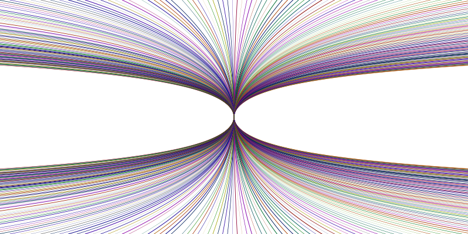

(fifth RacketCon)

27 Sept 2015 in St. Louis (the day after Strange Loop)
RacketCon is a public meeting for everyone interested in Racket: developers, contributors, programmers, educators, and bystanders. It’s an opportunity for all members of the community to come together to share plans, ideas, and enthusiasm. RacketCon will enable the entire Racket community to mingle: to update each other, to exchange ideas, to collaborate, and to help shape the future of Racket.
Keynote speaker
Sponsors
Previous RacketCons